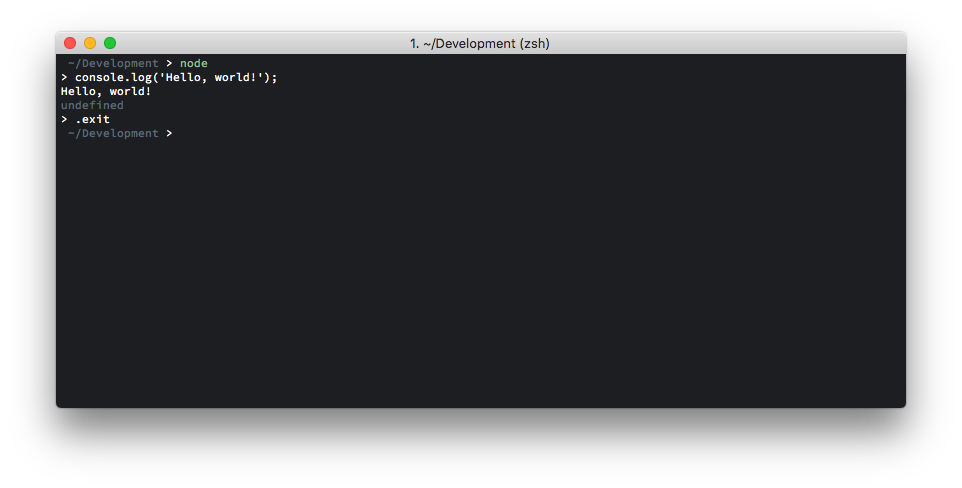
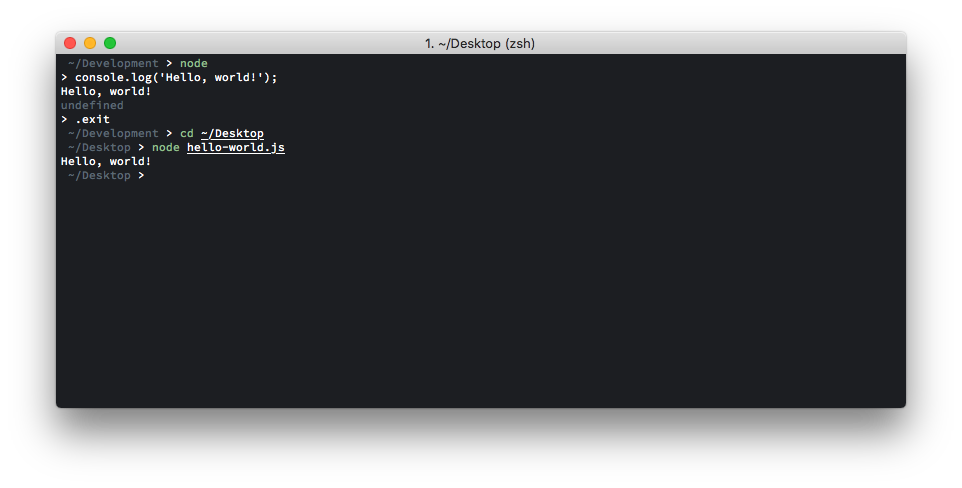

Introduction
This guide gives an introduction to Node.js, a server-side JavaScript runtime.
JavaScript serves as the scripting language for the browser. Node.js provides a set of libraries that enable the use of JavaScript to have file system access, host HTTP servers, etc. for the server. Node.js uses the V8 JavaScript engine from Chrome.
JavaScript is a dynamically and weakly typed language. The language itself is very flexible and can come to a shock from backgrounds like C++ or Java.
Structure
This guide assumes some prior programming language experience in a language such as Java, Python, or C++. Concepts common to most programming languages are run through quickly in the beginning. After that come topics more unique to Node.js. All of this is broken up into 3 sections:
-
The first chapters of this guide cover the ideas of JavaScript in general. In this, the basics of the languages are covered, followed by the use of modules to split up code into different files, the creation of classes, and the use of functional programming in JavaScript.
-
Afterwards, asynchronicity is introduced, which will be shown primarily through the use of the Node.js file system (
fs) module. There are many different patterns of modeling asynchronous behavior in JavaScript, which can be a somewhat steep learning curve for some. -
To close, the Node Package Manager—known as NPM—is introduced, which allows for the downloading of JavaScript packages from a massive package repository, and Babel, an NPM library that allows for the use of next-generation JavaScript.
To get going, go to the Getting Started section to get your environment set up.
Getting Started
Before getting our hands dirty with JavaScript, we'll need to set up our environment and make sure it's working. In this section, we'll get Node.js installed on your system, do a quick hello world, and give some resources that could help out later in learning and building up your JavaScript and Node.js skills.
Installation
The first step is to get Node.js on your system. We'll download Node.js for
Linux and macOS using nvm, and for Windows, the similar nvm-windows. After,
we'll make sure the node command works from the terminal, and that we have a
text editor to work with to get our hello world going in the next chapter.
Note: Throughout the guide there are references to terminal commands. Lines that you enter start with a
$. You don't actually need to type the$, it is simply shown for convenience.>is used for a Windows-specific section.
Installing Node.js
Follow the guide for your system to get going.
Windows
Follow the
installation instructions for nvm-windows.
Afterwards, run nvm version in Command Prompt or PowerShell to confirm that
nvm-windows has been installed.
Next, fetch the list of currently available Node.js versions that can be installed.
> nvm list available
Install the latest version of Node.js 8. Substitute the most recent version you see from the command above.
> nvm install 8.x.x
Next, run the command prompted to make this your current Node.js version.
> nvm use 8.x.x
To test that our install works, run the following:
> node --version
> npm --version
At the time of writing, I get the Node.js version v8.11.3 and NPM v5.6.0.
Yours might be more recent.
If you're having difficulties installing with this method, you can try installing Node.js directly from the installers on nodejs.org. See here.
macOS and Linux
The installation here is taken from the
nvm installation guide.
The first step is to install the most recent version of nvm (Node Version
Manager). nvm allows for the easy installation and switching of Node.js
versions.
$ curl -o- https://raw.githubusercontent.com/creationix/nvm/v0.33.11/install.sh | bash
Next, we'll clone the nvm repository to ~/.nvm and make sure it is loaded
to your profile.
$ export NVM_DIR="$HOME/.nvm"
$ [ -s "$NVM_DIR/nvm.sh" ] && \. "$NVM_DIR/nvm.sh"
Now we'll install Node.js.
This guide is based on Node.js 8. At the current time of writing, this is the
recommended version of Node.js. We'll install the latest version of Node.js 8
using nvm. This will also set your default version. (Carbon is the name for
the Node.js 8 LTS.)
$ nvm install lts/carbon
To test that our install works, run the following:
$ node --version
$ npm --version
At the time of writing, I get the Node.js version v8.11.3 and NPM v5.6.0.
Yours might be more recent.
If you're having installation problems, see the nvm guide linked at the top
of this subsection for help.
Text Editors
Instead of using IDEs, the recommended way to get started with Node.js is with a terminal and a text editor. In UAV Austin development, especially with certain repositories, a lot of of things will need to be done by the command-line.
There are a bunch of great text editors to use. A good short list is the following:
Everyone has their own favorite, but each of these are solid choices to go with. VS Code tends to be the most fully featured of these three.
Before moving forward, I'd recommend at least installing one of these.
Hello World
As is custom, we'll have to get a hello world example out of the way as a right of passage.
We'll do it two different ways.
Interactive Node.js
The easiest way to get started with Node.js is messing around in the interactive command-line shell.
Go ahead and open a terminal and type in node. You should see a prompt come
up on the left. Anything you type here is evaluated in real time.
To print out Hello, world! go ahead and execute the following:
console.log('Hello, world!');
To exit the shell, you can either press Control+C twice, or enter .exit.
Your output should look like the following:

We can see that console.log(...) is the print function for JavaScript.
Running from a File
The more useful way to run this is to create a script and run it from the command-line.
Create a file called hello-world.js with your favorite text editor. In my
case, I'll create it on my desktop so it is easy to find. The file contents
should read just as before:
console.log('Hello, world!');
Navigate to the directory in your terminal that the file is in, and run
node hello-world.js to run the file.
The output should be the same:

If you're not sure how to change directories to where the file is, you might want to read up on how to do basic terminal commands. Here's an example article.
Note that there is no compiling step here. It is simply interpreted by the JavaScript engine.
Resources
There are a ton of great resources on JavaScript and Node.js, to where it can almost get overbearing.
If you're looking for another book that goes more in depth about JavaScript, or aren't comfortable with the format in this guide, I would recommend the following free sources:
For general documentation, the following are very useful:
Note that these tend to be more focused on browser JavaScript rather than server-side like in Node.js.
Note: A thing to remember in looking up things in JavaScript is that the language has evolved a bit over time. This particular guide predominately uses features from the ECMAScript 2015 (also known as ES6) specification and later. If you come accross some archaic syntax, it's helpful to look at the date the content was published.
The Basics
This section covers basic programming concepts that are common to most programming langauges. Nothing here is particularly unique to JavaScript, and should be familiar in the context of other programming languages.
You'll learn about comments, the basic data types and variables in JavaScript,
control flow mechanisms like if statements, for loops, and while loops,
and functions.
Comments
Comments in JavaScript are the same as what you'd see in other C-like languages.
Basic comments are started with // like so:
// Hello.
Normally, when wanting multi-line comments, it's standard to keep repeating the
// pattern on each line:
// This is a crazy long comment that can't be
// contained on one line!
You can also use /* */ to make comments span multiple lines.
/* This comment just got
even crazier. */
Though, the /* */ pattern is conventionally used for documentation
comments on functions, classes, or modules.
Data Types and Variables
JavaScript is a dynamically typed language. This means that variables do not have a type attached to them and be assigned to values of all types.
// Declare a variable foo.
let foo;
// foo starts as a number.
foo = 37;
// foo is now a boolean.
foo = false;
In the above, we declare with a variable foo. We're then able to set it to
whatever value we want, or not at all.
Like many languages, statements in JavaScript are terminated with semicolons.
Note: Semicolons are not technically required in JavaScript, and some even recommend not using them. JavaScript uses automatic semicolon insertion to add in semicolons on newlines when they can be assumed. There are corner cases that can mess people up. The best practice is to always use semicolons.
Data Types
There are seven data types in JavaScript.
- Six primitive data types:
- Boolean
- Null
- Undefined
- Number
- String
- Symbol
- and Object
Primitives
All types except for objects are immutable. These values cannot be changed. That is not to say however that the variables assigned to a primitive cannot be changed. Here is a short description for each:
| Type | Value |
|---|---|
| Boolean | A Boolean is a logical value that can either be true or false. |
| Null | The Null type has one value: null. It represents the absense of a value. |
| Undefined | A variable which has not been assigned a value has the value undefined. |
| Number | All numbers in JavaScript are double precision 64-bit numbers. |
| String | Strings represent textual data. They are enclosed in single quotes, double quotes, or backticks. |
| Symbol | Symbols are values that can be checked for uniqueness. We'll ignore them in this guide. |
While many languages have just null, JavaScript has both null and
undefined. Normally, the nuance between these two values can be ignored.
All numbers, including integers, are all floating point numbers. Infinity
-Infinity, and NaN also also numbers.
Objects
Other values in JavaScript are considered objects. Objects in JavaScript can considered collections of key and value pairs. These keys are the properties of the object.
The simplest way to create an object in JavaScript is through the object literal syntax:
let foo = {
bar: 55,
baz: false
};
console.log(foo.bar); // Prints 55.
console.log(foo.baz); // Prints false.
console.log(foo.foobar); // Prints undefined.
If an object hasn't have a key, then the value is undefined.
Object keys can listed as strings if they are not valid identifiers.
let headers = {
Accept: 'application/json',
'Content-Type': 'application/json'
};
console.log(headers['Accept']);
console.log(headers['Content-Type']);
Object properties can be fetched using strings inside brackets along with the normal dot notation.
Arrays
The Array type is actually of type Object in JavaScript. The array literal
syntax is as follows:
let things = ['red', true, 9];
Note that arrays can be composed of different types.
Arrays can be indexed with brackets. Indexing begins at 0. The length
property gives the number of elemnts in the array.
let colors = ['red', 'white', 'blue'];
console.log(colors[1]); // Prints white.
console.log(colors.length); // Prints 3.
Variables
Variables in JavaScript are declared with var, let, and const. var is
traditionally used in older JavaScript code, and it's use is no longer
recommended. var is scoped to the inner-most function, as opposed to the
block like let. This is will be dicussed more in the
functions section.
Declaring a variable with let or const can only be done once per scope.
let hello = 'world';
let anotherOne = 3;
let hello; // SyntaxError: Identifier 'hello' has already been declared
Assignment can also happen when a variable is declared. If the variable is not
assigned, the value is undefined.
let a;
console.log(a); // Prints undefined.
Variables can be reassigned with var or let.
let day = 'Monday';
day = 'Tuesday';
However, variables declared with const cannot be reassigned.
const GRAVITY = 9.81;
GRAVITY = 10; // TypeError: Assignment to constant variable.
Properties of a const object can be mutated though!
const FOO = {
bar: 3
};
console.log(FOO.bar); // Prints 3.
// Setting the value to an object.
FOO.bar = { foobar: 'baz' };
console.log(FOO.bar); // Prints { foobar: 'baz' }.
Operators
JavaScript is also a weakly typed language, i.e., the language is not strict with its type rules and allows does many type conversions on operations. This can lead to some unexpected behaviors.
This chapter gives a quick overview of the main operators in the language.
Numeric Operators
These work with numerical values.
a + b- Addition.a - b- Subtraction.a / b- Division.a * b- Multiplication.a % b- Remainder.a ** b- Exponentiation.+a- Unary plus.-a- Unary negation.a++- Postfix increment.a--- Postfix decrement.++a- Prefix increment.--a- Prefix decrement.
Typically, the convention is to prefer the postfix operators in loops. Though it is best to use them sparingly to prevent confusing logic.
Using types other than numbers in the above will often lead to the result of
NaN.
Assignment
a = b- Assignment.a += b- Addition assignment.a -= b- Subtraction assignment.a /= b- Division assignment.a *= b- Multiplication assignment.a %= b- Remainder assignment.
Relational Operators
a < b- Less than.a > v- Greater than.a <= v- Less than or equal to.a >= b- Greater than or equal to.a in b- Check if an objectahas a propertyb.a instanceof b- Check ifais an instance of objectb.
Equality Operators
a == b- Equality.a != a- Inequality.a === b- Strict Equality.a !== b- Strict Inequality.
The difference between the strict and non-strict variety is that the first set
of equality operators will do type conversions to check for equality. For
example, 1 == '1' is considered to be true. This is normally not desired
behavior, and so it is best to use === and !== when possible to avoid
potential problems due to type conversions.
See here for a more detailed comparison
of == and ===.
Logical Operators
a && b- Logical AND.a || b- Logical OR.!a- Logical NOT.
Note: The value of
a && bis equal toaif eitheraorbis falsy, otherwise, it is equal tob. Similarly,c || dis equal tocifcis truthy, otherwise, it is equal tod.In normal logical operations this does not influence the behavior, however, this is quite useful for setting default values in case something is
undefined, or making sure a property can be accessed in an object.For example,
a.b && a.b.cwill returned the value of the nestedcproperty if it is truthy and if it's already been established thatbexists. Getting the value ofa.b.cthrows an error ifbdoesn't exist. This syntax apperas when inlining values instead of needing anifstatement or ternary operator.
String Concatenation
The addition operator (+) can be used for string concatenation. This can
include values of different types as well.
let num = 42;
console.log('my favorite number is ' + num + '!');
There is also an additional syntax called
templates literals
which allow strings to embed expression in the same way. Instead of using a
quote to enclose a string, backticks are used instead, and expressions can be
included inside a dollar sign and curly braces (${expr}). The following is
the same as the above:
let num = 42;
console.log(`my favorite number is ${num}!`);
Other Operators
cond ? expr1 : expr2- Ternary Operator (explained in the next chapter).delete a.b- Deletes a propertybfrom objecta.typeof a- Returns type ofaas a string.
More Information
There a bunch of other operators in the language (such as bitwise operators). To see a more exhaustive list, see the MDN Web Docs reference.
Control Flow
Control flow makes up the most important building blocks in a programming language: handling logic and dealing with looping constructs.
We'll start with if statements first.
if Statements
An if statement allows for basic branching on a conditional value (or
something that can be coerced into a conditional value).
The syntax is like that of Java or C.
if (someExpression) {
console.log('if block');
}
If someExpression is a value that is truthy, then the string
is printed.
Truthy values are those that are not false, 0, '', null, undefined,
and NaN. Note that empty objects are truthy.
An else block can handle running statements if the condition is not truthy.
if (false) {
console.log('1');
} else {
console.log('2');
}
In this case, 2 is printed out.
else if can check another condition if the ones above are false.
let num = 100;
if (num % 3 === 0) {
console.log('Divisible by 3.');
} else if (num % 5 === 0) {
console.log('Divisible by 5');
} else {
console.log('Not divisble by 3 or 5');
}
for Loops
The standard for loop pattern uses the initial value, condition, and
increment setup. The for loop will iterate a block while the condition
remains true. After each iteration, the increment is applied.
for (let i = 0; i < 10; i++) {
console.log(i);
}
The above will print out the numbers from 0 to 9.
for ... in Loops
The for ... in loop iterates over non-Symbol, enumerable properties of an
object.
With a basic object, this will simply print out the keys. In the example below, we can loop through each key this object has, and print out the key and value.
let prices = {
fruit: 3.99,
vegetables: 5.95,
cereal: 2.99
};
for (let food in prices) {
// Using the food as a key to get the price for each.
console.log(food + ' has a price of $' + prices[food]);
}
This will print:
fruit has a price of $3.99
vegatables has a price of $5.95
cereal has a price of $2.99
Note:
for...inloops can have somewhat unexpected behavior when classes are involved due to how inheritance works in JavaScript. See the Objects and Classes section for more information later on.
A for ... in loop should not be used on an Array.
for ... of Loops
The for ... of loop iterates over
iterable objects.
This includes things such as an Array or String.
The following simply prints out each number in the list.
let coolNumbers = [7, 37, 1337];
for (let num of coolNumbers) {
console.log(num);
}
while Loops
while loops repeat a code block while a condition is truthy.
let a = 1;
while (a !== 32) {
console.log('a is ' + a);
// Double the value of a.
a *= 2;
}
The example above will keep doubling the value of a until it reaches 32. At
that point the condition is false and the loop is done.
do ... while Loops
do ... while loops are like while loops, except that the condition is
checked after an iteration instead of before. This means they are guaranteed to
run the block at least once.
let message = '';
let i = 0;
do {
// Increment i by two and add it to the end of the message string.
i += 2;
message += i;
} while (i < 8);
// This should print out '2468'.
console.log(message);
These don't pop up too often in JavaScript code, but they are good to know.
break and continue
break and continue can be used to alter the flow of a for or while
loop.
break will cause the loop it is in to stop.
let a = 1;
// Keep looping until stopped manually.
while (true) {
// Increment the number by 2.
a += 2;
// Stop when it's 9.
if (a === 9) {
break;
}
}
// This should print out 9.
console.log(a);
continue skips the rest of the loop and makes the loop go to the next
iteration.
// Loop through even values from 2 to 20, inclusive.
for (let i = 2; i <= 20; i += 2) {
// Skip if this is a multiple of 6.
if (i % 6 === 0) {
continue;
}
console.log(i);
}
// The numbers 2, 4, 8, 10, 14, 16, and 20 are printed above.
Note that for nested loops, break and continue apply to the inner-most
loop.
switch Statements
switch statements allow for branching on expressions. Branches do allow for
fall-through, and so once a case is matched, all statements below are run until
break is used. The default case runs when nothing matches.
Here's an example:
let unit = 'euro';
switch (unit) {
// Cents fall-through with the dollar case so they are treated the same.
case 'cent':
case 'dollar':
console.log('This is American currency');
// The break is required to prevent the execution from going further.
break;
case 'euro':
console.log('This is European currency');
break;
// Default will allow for anything else.
default:
console.log('Not sure what this is...');
}
try ... catch Statements
try ... catch blocks allow for code that might fail to execute.
Errors can be thrown with the throw keyword.
try {
throw Error('This is not going to work');
} catch (err) {
console.error(err);
}
This will log the error message.
console.error(...) is traditionally used for printing errors since it prints
to stderr.
The finally block can be attached for code to execute regardless of what
happens in the try or catch block:
try {
throw Error('This is not going to work');
} catch (err) {
console.error(err);
} finally {
console.log('hello');
}
At least one of catch or finally is required.
Note: Unlike Java and some other langauges, there are no such things as multiple catch blocks. To only catch one type of error, you'll need to check what kind of error it is by either using
typeofor inspecting its message and re-throw the error if it's not what you're expecting.
Ternary Operators (?:)
Ternary operators work as inline if statements.
The syntax for the ternary operator (or ?:) is as follows:
condition ? expr1 : expr2
If the condition is truthy, then this above evaluates to expr1, otherwise, it
evaluates to expr2.
See the following example:
let age = 17;
console.log(age >= 16 ? 'You can get a driver\'s license' : 'No driving');
console.log(age >= 18 ? 'You can buy cigarettes' : 'No smoking');
Shorthand
The curly braces in if statements, for loops, and while loops, can be
left off if there's only one statement in the body. Like so:
if (someExpression) {
console.log('It is true!');
}
// Or also...
if (someExpression)
console.log('It is still true...');
In most circumstances it's normal to just keep the curly braces, you never know if you'll want to add more statements inside the body.
A neat use case of leaving off the blocks is with very short if ... else
statements.
if (someExpression) console.log('true');
else console.log('false');
Functions
Like in most languages, individual pieces of execution are blocked off into functions in JavaScript. The syntax is mostly familiar to the other C-like languages.
A Basic Function
Here's a basic case of wrapping our hello world example into it's own function.
function sayHello() {
console.log('Hello, world!');
}
// Call the function.
sayHello();
If you either save this to a file and run the script, or run this in an interactive Node.js session, you'll get the same print out as before.
Just like in the rest of the language, you don't provide return types for the functions.
NOTE: The convention in JavaScript is to use
camelCasenaming for normal functions (as well as variables in general).
Arguments
Let's take our example above, but be able to say hello to specific people.
We'll take an argument person and print that like Hello, José!, for
example.
function greet(person) {
// Template literal syntax below!
// Same as saying 'Hello, ' + person + '!'.
console.log(`Hello, ${person}!`);
}
// Prints out 'Hello, José!'.
greet('José');
If we call greet('José') we'll get our expected output.
Optional Arguments
The way JavaScript handles function arguments is a little different. What
happens if we call greet() without a person's name?
function greet(person) {
// Template literal syntax below!
// Same as saying 'Hello, ' + person + '!'.
console.log(`Hello, ${person}!`);
}
greet();
In the above, we actually get Hello, undefined!. Instead of having to say
that an argument in optional in JavaScript, we just don't provide it. Variables
which aren't passed into a function are set to the value undefined.
Similarly, if you pass in more arguments than a function can take, they are
simply ignored.
Next, we'll adapt our function to print out a generic Hello. message if no person was provided.
function greet(person) {
// Print out the name too if it's truthy, i.e., not undefined,
// null, '', and so on.
if (person) {
console.log(`Hello, ${person}!`);
} else {
console.log('Hello.');
}
}
// Prints out 'Hello, José!'.
greet('José');
// Prints out 'Hello.'
greet();
Default Arguments
JavaScript also allows for the use of default arguments. Values which are not provided can have their value defaulted to another.
Here's an example with adding numbers:
function add(a, b = 1) {
return a + b;
}
// Prints 7.
console.log(add(4, 3));
// Prints 5.
console.log(add(4));
Anonymous Functions
Not all functions created in JavaScript are assigned names. Functions can be passed into different functions as arguments and can be bound to variables.
To create an anonymous function, simply don't provide the name like before:
let a = function () {
console.log('spooky');
}
// Runs the function.
a();
Arrow Functions
Similar to anonymous functions, arrow functions are an additional syntax of creating unnamed functions.
The above can effectively written as:
let a = () => {
console.log('spooky');
}
// Runs the function.
a();
The syntax () => {} is essentially the same as function () {}. It is just a
bit shorter.
There is more syntactic sugar with makes arrow functions nicer to use. If there is only one argument passed, the parenthesis can be removed like so:
let increment = a => {
return a + 1;
}
// Prints 6.
console.log(increment(5));
The above can be shortened even more. When using the form
(a, b, c...) => { return d }, this can be shortened to (a, b, c...) => d.
Without the curly braces, the expression on the right is automatically
returned.
Therefore, we can shorten this to:
let increment2 = a => a + 1;
// Prints 11.
console.log(increment2(10));
The above is very convenient for creating small functions.
Note: Many JavaScript style guides recommend not removing the parenthesis around the arguments in arrow functions unless the braces are also removed on the right. Thus,
(a) => { /* */ }anda => exprwould be correct, but nota => { /* */ }.
We'll discuss the use of unnammed functions (anonymous and arrow) in more detail in the Functional Programming and Async Patterns chapters.
There are some small differences between arrow functions and regular functions
defined with function. Regular functions have a variables called this,
arguments, super, and new.target set as well, which are missing in arrow
functions. We'll get into some of these in the
Objects and Classes chapter.
Modules
Programming is pretty difficult when you can only use one file. Let's change that. This chapter introduces Node.js modules.
CommonJS require(...)
CommonJS refers to the style of module loading most prevalent in Node.js.
As opposed to using something like an import statement at the top of a file,
modules in Node.js are typically loaded using the require(...) function.
This function returns the entire contents of a module.
Note: There are some other systems in use. You can also build modules for Node.js in C++ and
requirethem as well. These can be painful to write so don't get too excited about using C++ with Node.js.
For this chapter, we'll use the
path module
in Node.js. Too see the modules that Node.js offers, see the
API Documentation.
Now for a simple example of using require(...):
// We have to assign the module to a variable. In theory, we can name
// it whatever we want. This is a constant since we don't plan to
// re-assign this value.
const path = require('path');
// A common thing to do in the path library is to build up a full
// path by parts. You can do that using path.join(...). Remember that
// the .. pattern goes up a directory.
let fullPath = path.join('a/b/c', '../d', 'cool-file.txt');
// Prints a/b/d/cool-file.txt on Linux / macOS. Uses backslashes on
// Windows.
console.log(fullPath);
The above gives an example for building paths that'll work on all Linux, macOS, and Windows. We could check if we were on Windows and handle the building paths with backslashes ourselves, but why not use a library if it's already there!
Destructuring Assignment
So what if we want to require join directly. In the previous example we had
to access it out of the entire exports of path. We can use a JavaScript
feature called destructuring assignment to do it.
Destructuring assignment lets you assign variables in the shape of an object. Let's see this in action.
// We have an object with properties.
let things = {
one: 1,
two: 2,
three: 3
};
// Having to say things.one, things.two, and things.three takes too
// much typing. So we can get the values of one, two, and three, out
// all at once!
let { one, two, three } = things;
// Now one, two, and three have been assigned values from the object
// called things.
console.log(two); // 2
Similarly, we can do the same with arrays:
let [a, b] = [1, 2];
console.log(b) // 2
Now back to our join example:
const { join } = require('path');
let fullPath = join('a/b/c', '../d', 'cool-file.txt');
console.log(fullPath);
This does the same thing, but we now we can get join without having to deal
with it inside path. With long module names, this can save some space and
makes things more readable (unless it's hard to tell where something came
from).
Creating Modules
Now it's time for the opposite point of view. How do we make modules that we can use?
Let's start with a sample directory setup inside a folder called
modules-intro/:
modules-intro
├── one.js
├── two.js
└── three.js
We're going to one.js and two.js from inside three.js.
Normal Exports in one.js
Code in your Node.js files is not automatically available to other files. You
have to explicitly export it in order for it to be available. The primary way
of doing this is by setting properties of exports.
Here's a typical example for one.js:
// one.js
// Prints all the positive integers up to and including an upper
// limit.
exports.printNumbers = (upper) => {
for (let i = 1; i <= upper; i++) {
console.log(i);
}
};
// My own personal favorite. In caps since it's a constant.
exports.FAVORITE_NUMBER = 37;
In the above we have a module which if we load it has a property that's a function and one that is a constant.
A Single Export in two.js
Now we'll export one thing to represent the entire module. We can do this by
setting the value of module.exports.
Here's what we'll have in two.js:
// two.js
// Our export is a function that is a factorial implementation.
module.exports = function fac(n) {
if (n === 0) return 1;
else return n * fac(n - 1);
};
In the above we export a simple factorial function. The function is given the
name fac so that it can call itself recursively, however, this does not
mean the function is called fac to the outside. Instead, the result of using
require on this module is the function directly.
Note:
exportsandmodule.exportsactually refer to the same thing. If we were to just sayexports = ...in the above, then we would be changing the whole value of the exports instead of adding to it, and so exporting wouldn't work.
Putting it Together in three.js
Now we can combine these files together and be able to use them.
Here's our content for three.js:
// three.js
// Importing the other modules relative to this file (hence the
// `./`). The `js` can also be left off.
const { printNumbers, FAVORITE_NUMBER } = require('./one');
const factorial = require('./two'); // We can name this whatever.
// Print all the numbers up to the constant.
printNumbers(FAVORITE_NUMBER);
// Now print the factorial of it.
console.log(factorial(FAVORITE_NUMBER));
Now if we run this on the command-line, we'll get the output we expect:
$ node three.js
1
2
3
4
<...>
36
37
1.3763753091226343e+43
This, of course, is a simple example. But you can do just about anything. Go wild.
Objects and Classes
An object in JavaScript can be perceived as a map from a string to a primitive, a function, or another object (see "Objects" in 3.2).
We know the basic syntax for creating an object:
// A loud dog
let dog = {
volume: 2
};
But we can also place a function inside an object and call it:
let dog = {
volume: 2,
bark: function () {
console.log('Bark!');
}
};
dog.bark(); // Bark!
Now dog is acting more like a class. But what if we want to get a property
inside dog and use it in bark?
let dog = {
volume: 2,
bark: function () {
console.log('Bark! Volume: ' + volume);
}
};
dog.bark(); // ReferenceError: volume is not defined
This will not work—the interpreter thinks that we are trying to reference
a variable called volume. But in reality, we wish to reference
the property volume inside the object dog.
We could try this instead:
let dog = {
volume: 2,
bark: function (dog) {
console.log('Bark! Volume: ' + dog.volume);
}
};
dog.bark(dog); // Bark! Volume: 2
This prints the result that we expected, but note that we referenced dog
twice on the function call. We want to make dog.bark act more like a class
method that can access the property of the object it belongs to.
let dog = {
volume: 2,
bark: function () {
console.log('Bark! Volume: ' + this.volume);
}
};
dog.bark(); // Bark! Volume: 2
When we call a function inside of an object in this way, we modify a special
variable called this, which is intended to refer to the currently scoped
object, very much akin to Java. In this case, this has been assigned to
dog.
Classes using prototypes
We wish to make dog into a real class named Dog that can be created using
a constructor, so that we can make many instances of Dog that we can call
bark on.
function Dog(volume) {
this.volume = volume;
};
Dog.prototype.bark = function () {
console.log('Bark! Volume: ' + this.volume);
};
let dog = new Dog(2);
dog.bark(); // Bark! Volume: 2
Notice two keywords here: prototype and new. When we call new, the this
keyword is assigned to an empty object ({}), with a special exception: everything
from Dog.prototype is copied over to the empty object. When the function call
finishes, this is used as the return value and is ultimately assigned to dog.
For future reference, when class method is mentioned using prototype, we mean
that the class method is not static - i.e. the method must be called from an
instance of the class.
Classes using ES6 syntax
Since ECMAScript 6 (officially known as ECMAScript 2015, or ES2015), a more comfortable syntax has been developed for classes:
class Dog {
constructor(volume) {
this.volume = volume;
}
bark() {
console.log('Bark! Volume: ' + this.volume);
}
}
let dog = new Dog(2);
dog.bark(); // Bark! Volume: 2
ES6 classes also allow us to define static methods by prepending the
function with static. Static methods do not require an instance
of the object to be created before calling the method.
Getters and setters
Prefixing a class method with get or set allows it to be accessed as if it
were a property:
class Foo {
constructor() {
this._bar = 1;
}
get bar() {
return this._bar;
}
set bar(value) {
if (typeof value !== 'number') {
throw new TypeError('value must be a number');
}
this._bar = value;
}
}
let foo = new Foo();
console.log(foo.bar); // 1
foo.bar = 3;
console.log(foo.bar); // 3
foo.bar = 'test'; // TypeError: value must be a number
Inheritance
It is also possible to inherit classes using the extends operator in ES6.
Inheritance causes us to inherit the methods from the class we wish to inherit
from (the superclass). We call the superclass's constructor by calling
super() at the beginning of our class's constructor.
Tricks
Object.assign
Suppose we wanted to copy all of the properties of object foo onto object bar.
We could do the following:
let bar = {
text: 'baz'
};
bar.a = foo.a;
bar.b = foo.b;
bar.c = foo.c;
This requires us to know ahead of time the properties that foo has and then copy
each property one by one. This is very tedious if we have dozens of properties in the
object that we wish to copy. Instead, we can use Object.assign:
let bar = {
text: 'baz'
};
Object.assign(bar, foo);
Now bar contains text, along with whatever properties foo might have.
Spread syntax
Since ECMAScript 2018, it is also possible to merge objects together without
the use of Object.assign:
let baz = {
...foo,
...bar
};
It is also possible to replace this syntax:
let x = 2;
let y = 3;
let z = 4;
let coords = { x: x, y: y, z: z };
with the following:
let x = 2;
let y = 3;
let z = 4;
let coords = { x, y, z };
Destructuring
We can extract multiple variables from an object, provided that our variable names correspond to the properties in the object:
let coords = { x: 2, y: 3, z: 4 };
let { x, y, z } = coords;
console.log(x); // 2
console.log(y); // 3
console.log(z); // 4
Converting to JSON
An object can be serialized (converted) into JSON with a simple function:
let json = JSON.stringify(object);
The function returns a string representation of the specified object, which is entirely safe to pass over the network.
To convert it back to an object, we simply call its inverse:
let obj = JSON.parse(json);
Note, however, that not all objects can be safely converted to JSON:
- Circular references (objects that refer to themselves) will cause an error
during
JSON.stringify. - All methods are lost, and classes lose their type when stringified.
- Multiple properties that refer to the same object will now refer to different objects with identical properties.
Functional Programming
Functional programming is the only programming paradigm that is actually functional, whereas other paradigms do not do anything at all.
Jokes aside, functional programming refers to the use of functions to concisely manipulate and filter data.
Introduction
Traditionally, most iterative solutions involve the use of a for loop:
// Print and increment every element in the array by 1
for (let i = 0; i < arr.length; i++) {
console.log(arr[i]);
arr[i]++;
}
While searching through Stack Overflow, however, you may have seen another
approach to iteration using forEach:
arr.forEach(function (element, index) {
console.log(element);
arr[index]++;
});
Here, we use a function, rather than a for loop, to represent the body
of the loop.
What if we wanted to create a new array out of this loop? We could take a traditional approach:
let arr2 = [];
for (let i = 0; i < arr.length; i++) {
arr2[i] = arr[i] + 1;
}
We could also take a functional approach using map:
let arr2 = arr.map(function (x) {
return x + 1;
});
Using map, the original array arr is left unmodified, and a new array is
created for us.
Notice that this syntax is somewhat verbose. We can use arrow notation instead to represent the function:
let arr2 = arr.map(x => x + 1);
This means that for every x in the array (x is the first argument passed into the function we created; it could be any variable name), return x + 1.
Reference
Array.prototype.map
Transforms a given array by a given function and returns the result as a new array.
Example
Let points be an array of x, y, z points:
let xPoints = points.map(point => point.x);
xPoints will then contain an array of numbers corresponding to the x
coordinate of each point. The order of the points is preserved.
Array.prototype.filter
Returns a new array containing only the elements that pass a given condition.
Example
Let points be an array of x, y, z points:
let pointsInBounds = points.filter(point =>
Math.abs(point.x) < 100 &&
Math.abs(point.y) < 100 &&
Math.abs(point.z) < 100
);
pointsInBounds will then contain only the points that are located within 100 units from the origin (0, 0, 0) on all three axes.
Array.prototype.reduce
Returns a value as an aggregate of all of the elements of an array.
Example
Let cart be an array of items containing price:
let total = cart.reduce((total, product) => total + product.price);
total will contain the total price of all of the items in cart (minus tax,
of course).
Chaining
Due to their immutability, the results of these basic functions can be chained and nested within one another for elaborate computations. For the purposes of brevity, however, we will not cover a complex example.
Composition
Like in algebra, we can wrap a function within another function:
let f = x => x * 2;
let g = x => f(x) + 1;
console.log(g(2)); // 5
It is also possible to modify the special this variable manually when
calling a function by using Function.prototype.bind:
function someLegacyJsMethod() {
return this.x;
}
let point = { x: 2, y: 8, z: 1 };
let func = someLegacyJsMethod.bind(point);
console.log(func()); // 2
Alternatively, we may use bind to partially fill the arguments of a function
without calling the function:
let f = (x, y, z) => x + y + z;
let g = f.bind(this, 1, 2);
console.log(g(3)); // 6
You will only see use of bind in special circumstances, such as callbacks,
where the value of this is lost or ambiguous.
Async Patterns
Asynchronous programming allows multiple parts of a program to run concurrently without necessarily needing to manage multiple threads.
How can multiple blocks of code run at the same time, all the while using a single thread? The answer is that the code does not run at the same time; rather, an event loop in the background switches rapidly between coroutines that represent multiple paths of execution.
Using asynchronous programming, we can perform other tasks while waiting on a long-running task to finish. Without it, our entire program could freeze simply waiting on an I/O operation. Hence, the async paradigm is the driving force of the "event-driven I/O" concept that originally propelled Node.js to fame.
This section covers common async patterns and approaches in Node.js, including
callbacks, promises, async/await syntax, and event emitters.
Callbacks
A callback is a function that is called after a function's execution has been completed. It is the original form of asynchronous programming in Node.js.
Instead of pausing the program until a certain function has been executed, we immediately exit the function, and the function runs on its own. When the execution of that function is done, the main execution of the program pauses for a moment, and the callback function that we specified is then called and run.
I/O
Most languages prefer file I/O in this way:
const fs = require('fs');
let data = fs.readFileSync('testFile.txt'); // a long pause here
console.log(data);
However, Node.js prefers file I/O using callbacks:
fs.readFile('testFile.txt', (err, data) => {
if (err) throw err;
console.log(data);
}); // no delay here
console.log('Hi');
Notice that Hi gets printed before the data of testFile.txt, despite
the code being written after the callback!
Note: It is bad practice to use the "Sync"
fsfunctions in Node.js unless it is in something where asynchronous behavior doesn't matter, such as a short one-time script or in an a setup section that must complete before anything else can happen.If a synchronous
fsfunction is called otherwise, it temporarily stops other operations from running asynchronously. This can prove to be a problem when running an HTTP server or making HTTP requests.
The greatest weakness of callbacks is when each one depends on the previous one:
const fs = require('fs');
const http = require('http');
fs.readFile('testFile.txt', (err, data) => {
if (err) throw err;
let req = http.request('http://example.com/upload', { method: 'POST' }, (res) => {
console.log('Got a response: ' + res.statusCode);
res.on('end', () => {
// We cannot actually get `res.data` (it's a little more complicated than
// that), but assume that we could.
fs.writeFile('testFileResponse.txt', res.data, (err) => {
if (err) throw err;
console.log('Wrote response to file');
});
})
});
req.write(data);
req.end();
});
While the scenario in the code above may seem fantastical, this nesting of callbacks highlights a serious problem with callbacks known as callback hell. Callback hell is dangerous because it can result in messy code and difficult-to-trace bugs.
By convention, an error argument is often passed as the first argument in a
callback. If the error is null or undefined (it is normally best to just to
allow both), then the operation succeeded. Otherwise, the operation failed and
that error should be handled. In the example above we can see that this will
simple throw the error.
Sleeping
So far, we haven't talked about any sleep functions in JavaScript... and that's because there isn't one.
Things in JavaScript are asynchronous, and a sleep function is inherently synchronous which makes for a big problem.
Instead, there are two other things we can use: timeouts and intervals.
Timeouts
Timeouts as simple. You pass a callback that gets executed after an amount of time.
Here's a quick example:
console.log('Ha...');
setTimeout(() => {
console.log('choo.');
}, 1000);
console.log('...');
If you run this, you'll notice that this is printed as:
Ha...
...
< a break for a second >
choo.
The code after creating the timeout will run first, even if the timeout is 0 ms.
If we wanted to have another timeout run after that, we would simply create another timeout inside the callback that's there. We do this instead of just making another interval at the top level that happens to be longer, since the time until a timeout runs isn't completely gauranteed.
console.log('Ha...');
setTimeout(() => {
console.log('choo.');
setTimeout(() => {
console.log('> Bless you!');
}, 3000);
}, 1000);
consoloe.log('...');
Intervals
Intervals keep calling a callback on a provided interval. You can create a spammy message in your terminal every second with this:
setInterval(() => {
console.log('Is this annoying yet?');
}, 1000);
The first iteration of the interval doesn't run until the first second as passed.
The setInterval(...) function does also return back an interval object. To
make the interval stop, you can pass this object into clearInterval(...).
Similarly, you can cancel a timeout from happening with clearTimeout(...).
To make our lives better, we must study another approach to asynchronous programming known as promises.
Promises
A promise is a container for a value that does not exist yet, but will exist in the future. A promise may have three states: pending (the value does not exist yet), fulfilled (the value exists), or rejected (the value does not exist due to an error).
Promises did not natively exist in JavaScript until ECMAScript 2015; before then, libraries such as Bluebird were used instead to provide support for this type of asynchronous programming.
When we call an async function, it immediately returns a pending Promise
object. When the async function is complete, the promise is set to fulfilled or
rejected, and an event is fired.
fetchPlaylist().then(playlist => {
console.log(playlist);
}).catch(console.error);
In this example, fetchPlaylist is an async function that returns a promise.
We wrap this promise with then, which calls a callback when the promise
is fulfilled. In the case that the promise is rejected, the callback in catch
is called instead.
Note: All promise rejections must be handled. Without a
catchclause, the program will suffer an "Unhandled promise rejection" error, since promises that are wrapped with callbacks are unable to throw ordinary exceptions.
However, we still have not solved the callback hell problem. In the next section, we will introduce new syntax that solves the problem once and for all.
async/await
Despite the prevalence of asynchronous functions, most of our programming remains linear in practice—hence the plight of "callback hell."
Instead of wrapping our promises with callbacks, why can't we just wait for the promise to be fulfilled, all the while keeping the event loop going (so as to not freeze other tasks)?
Since ECMAScript 2017, this functionality is now available:
let results = await axios.get('https://example.com/posts/search?name=foo');
console.log(results.data); // a JSON object of our results, perhaps?
In this example, we use the axios
HTTP library to perform an asynchronous GET request. The flow of the program
clearly pauses on the await clause and then proceeds to the subsequent line.
However, we can only use await in functions that have been declared with
the async keyword, since await is, in reality, syntactic sugar to produce
a callback from our promise, rather than a magical conversion to traditional
synchronous code.
async function getResults() {
return await axios.get('https://example.com/posts/search?name=foo');
}
getResults().then(results => console.log(results.data)).catch(console.error);
The top level of the script will always use at least one .then and .catch, since await cannot be used at the top level.
What about an async function that does not actually contain an await?
async function add(a, b) {
return a + b;
}
add(2, 2).then(console.log).catch(console.error);
We can observe that all async functions, regardless of whether they
depend on await or not, return a Promise. Conversely, functions
that directly return a Promise do not need to be marked async unless they
depend on await:
function getResults() {
return axios.get('https://example.com/posts/search?name=foo');
}
getResults().then(results => console.log(results.data)).catch(console.error);
This code produces the same outcome because axios.get already returns a Promise object.
Catching exceptions
Catching rejected promises using async/await is equivalent to native
try/catch syntax:
try {
await thisCouldFail();
} catch (e) {
console.error('It failed!!', e);
}
Wrapping callbacks with promises
Many libraries, including Node.js itself, still use the old style of callbacks.
We can "promisify" a method by returning our own Promise object and fulfilling
it in the callback's body:
function readFileAsync(file) {
return new Promise((resolve, reject) => {
fs.readFile(file, (err, data) => {
if (err) reject(err);
else resolve(data);
});
});
}
For most methods, this is all it takes to create a promised version of a function that would otherwise require a callback.
Event Emitters
Event emitters are objects that emit events which can be observed and handled.
When an event occurs, what can we use to handle the event? Naturally, we can use a pattern that we have already learned: callbacks.
Chatroom
Suppose we wish to represent a chatroom and handle various events from it, such as when a user joins or leaves the room, and when a message is received.
class Chatroom extends EventEmitter {
constructor() {
super();
this.on('join', client => {
console.log(`${client.name} joined the room.`);
});
this.on('leave', client => {
console.log(`${client.name} left the room.`);
});
this.on('message', (client, msg) => {
console.log(`${client.name}: ${msg}`);
});
}
}
class Client {
constructor(room, name) {
this.room = room;
this.name = name;
this.joined = true;
this.room.emit('join', this);
}
say(msg) {
if (!this.joined) {
throw new Error('must be currently in a room to talk');
}
this.room.emit('message', this, msg);
}
leave() {
this.joined = false;
this.room.emit('leave', this);
}
}
let room = new Chatroom();
let client = new Client(room, 'Foo'); // Foo joined the room.
client.say('hello'); // Foo: hello
client.leave(); // Foo left the room.
We have just built a simple chatroom in a few lines of JavaScript.
Notice that the Chatroom class inherits the EventEmitter class, which
exposes the emit and on functions; the bread and butter of event-driven
I/O. Anyone can listen to any event in an event emitter, and the number
of listeners on any event is indefinite.
Networking
Event emitters and promises can be combined to create a powerful pattern for networking.
Suppose we wish to send a request to a server over an arbitrary network protocol and wait for a response. The problem, however, is that any number of irrelevant packets may also come in while we are waiting for our desired response packet. The traditional solution to this often involves a handler table and a global variable that indicates whether or not someone is waiting for a response for a particular packet (and perhaps the corresponding list of pending promises for that request, in our case).
Instead of a handler table, we can instead use event emitters to wait for a response:
class GameClient extends EventEmitter {
// ...
send(msg) {
this.socket.write(JSON.stringify(msg));
}
requestPlayerList() {
return new Promise(resolve => {
this.send({ type: 'player-list' });
this.once('player-list', msg => {
resolve(msg.players);
});
});
}
}
// ...
let players = await client.requestPlayerList();
Using once instead of on, the event listener is automatically removed
once the player-list event has been received.
NPM
npm (Node Package Manager) is the default package
manager for Node.js and is also used for front-end JavaScript. It has the
largest package index of any package manager for any programming language and
has packages for a ton of things. There are a couple other package managers for
Node.js such as yarn and pnpm, however, they also use the npm package index.
npm should have been included with your Node.js installation.
Creating a npm Project
package.json is the file that contains the metadata about a Node.js project
for npm. You can create a new project using npm init and it will generate a
package.json for you. Let's go ahead and do just that.
First, we'll create a project directory and cd to it.
$ mkdir my-npm-project
$ cd my-npm-project
Now that we've created the folder and moved inside it, we'll call npm init.
The utility will ask a bunch of questions about our project. We'll just create
it with the default options that it suggests. Just keep hitting enter on all
the prompts.
$ npm init
This utility will walk you through creating a package.json file.
It only covers the most common items, and tries to guess sensible defaults.
See `npm help json` for definitive documentation on these fields
and exactly what they do.
Use `npm install <pkg>` afterwards to install a package and
save it as a dependency in the package.json file.
Press ^C at any time to quit.
package name: (my-npm-project)
version: (1.0.0)
description:
entry point: (index.js)
test command:
git repository:
keywords:
author:
license: (ISC)
About to write to /path/to/your/my-npm-project/package.json:
{
"name": "my-npm-project",
"version": "1.0.0",
"description": "",
"main": "index.js",
"scripts": {
"test": "echo \"Error: no test specified\" && exit 1"
},
"author": "",
"license": "ISC"
}
Is this ok? (yes)
Great! Now we have a basic project set up. We can see the contents of the
package.json file in the npm output. Let's go over what these things mean:
- name: This represents the name of the package, normally this is the same
as the name of the directory. If we were to publish this package to the
npmpackage index, this is the name it would use. - version: The version of our package.
- description: A short description of what our package is. This is displayed on npmjs.org if the package is published.
- main: The main JavaScript file for the the package. If we are to
require('my-npm-project'), then this is the file that is loaded. - scripts: This section has scripts you can call using
npm. If we runnpm testin this directory, then thescripts.testcommand will be executed. In general, to run scripts of any name you'll need to usenpm run <script-name>, in this case, it would benpm run test. For this,npm testhappens to work directly since it is a special case. - author: The author of the package.
- license: The terms this package is licensed under. Normally this is
accompanied with a
LICENSEfile with the terms.
There are a bunch of other fields
that can be in a package.json, but those are out of scope for now.
Let's get the main JavaScript file going. Create a file named index.js in the
my-npm-project directory. As an example, we can put the hello world example
in it:
console.log('Hello, World!');
Now, if we run node . in this directory, it'll run our hello world script.
$ node .
Hello, World!
Since index.js is labeled at the main file in package.json, node knows
which script to run when referencing the project directory.
Installing Dependencies
The most useful part of npm is to install packages. To keep it simple for
now, we'll just make our hello world script a little prettier. Let's print it
in blue letters.
To do this, we'll install the
chalk npm package. This is one of many
npm libraries that you can install to make it easier to work with colors in
the terminal. You can check the npm page to see usage instructions.
$ npm install chalk
npm notice created a lockfile as package-lock.json. You should commit this file.
npm WARN my-npm-project@1.0.0 No description
npm WARN my-npm-project@1.0.0 No repository field.
+ chalk@2.4.1
added 7 packages in 1.186s
7 packages were installed since npm handled the sub-depedencies of chalk
itself. You can ignore the package-lock.json file it created. You can see
that a folder called node_modules/ has been created in your directory. This
is where npm installs its packages. These dependencies only work in the
current project and don't affect other's on your machine.
Now we'll go ahead and use it. In our index.js file, we'll need to require
the chalk library. Afterwards, we'll use chalk to make our text blue.
const chalk = require('chalk');
console.log(chalk.blue('Hello, World!'));
Now when running node ., we have color!
Note: If you're on Windows, colors might not work. You can get around this by either using git bash to run the script, or checking this page on how to enable this in
cmd.exeon Windows 10. It's not too important for this example.
The package.json file as been updated to include the dependencies now:
{
"name": "my-npm-project",
"version": "1.0.0",
"description": "",
"main": "index.js",
"scripts": {
"test": "echo \"Error: no test specified\" && exit 1"
},
"author": "",
"license": "ISC",
"dependencies": {
"chalk": "^2.4.1"
}
}
Running npm install without a package name will install all the depedencies
listed in the package.json in that directory.
Note: There is another section of dependencies called
devDependencies. These are for packages that are required when building or testing the packages' contents, but aren't actually required inside the source code at runtime. You don't need to worry about it now, but when building realnpmlibraries you'll need to differeniate them. They are not installed when installing packages withnpm install --production.
Installing Packages Globally
Instead of installing a dependency for a specific project, you can also install one into the global scope so that you can use a command anywhere.
For instance, we'll try out the
http-status-cli package. This is a
little package that can print out what the meanings of HTTP status codes like
404 mean.
To install it, we'll just need to use npm like normal but with the -g flag
for global.
$ npm install -g http-status-cli
And now in the terminal you can use the globally installed package to find out what 404 or any other code means.
$ http-status 404
404 - Not Found
The best known of them all, the 404 status code indicates that the requested r
esource was not found at the URL given, and the server has no idea how long for.
$ http-status 201
201 - Created
A 201 status code indicates that a request was successful and as a result, a r
esource has been created (for example a new page).
npm makes installing command-line utilities convenient. There are a bunch out
there.
Babel
Babel is a JavaScript compiler that can compile more recent versions of JavaScript to older versions. This allows for features that are not yet available in some web browers or in Node.js to be used.
This page provides a quick overview of what Babel can let you work with, but will not dive into how to set it up.
ES6 Imports
Node.js itself implements most of the newer JavaScript standards. One feature
that is missing, for example, is ES6-style imports. Node.js uses the
require(...) syntax for requiring modules. ES6 Imports allow for importing
modules using the import syntax.
The following example shows equivalent imports from both styles.
// Regular require(...).
const fs = require('fs');
// ES6 Imports.
import fs from 'fs';
The later is much cleaner and feels much more standard.
ES6 Imports also allow for destructuring:
// Regular require(...).
const { readFile } = require('fs');
// ES6 Imports.
import { readFile } from 'fs';
If you try and use import from your Node.js REPL, you'll notice that it won't
work. This, is where Babel comes in. Note that require(...) will still work
in Node.js code being compiled with Babel.
To see the full syntax of ES6 Imports, see the
MDN Web Docs import reference.
This shows how to use aliases while importing and how to do more compilated
imports. Note that some of these might be specific to the Web and not Node.js
ES6 Exports
The ES6 Import syntax also ships with an exporting syntax as well.
Instead of using export.name = ..., you can directly export a variable,
function, etc. using export.
// Regular export.
exports.doAThing = function () { console.log('a thing'); };
// From another module.
const { doAThing } = require('./other-module');
// ES6 Exports.
export function doAThing() { console.log('a thing'); }
// From another module.
import { doAThing } from './other-module';
Note: No semicolon was provided above since this doesn't require one like a normal assignent.
When exporting a function or class as the sole export of a module in Node.js,
you'd do it by setting module.exports. With ES6 Exports, instead, you use
export default.
// Regular export.
module.exports = class Example {};
// From another module.
const Example = require('./other-module');
// ES6 Exports.
export default class Example {}
// From another module.
import Example from './other-module';
Note: Internally, Babel doesn't equate these two exactly. using
export defaultactually ends up naming the exportdefault. If you were torequirethis module, you need to userequire('./module-name').defaultto get the value instead. There is a plugin which restores this behavior so you can just userequire('./module-name').
As with require(...), setting the value of module.exports or the properties
of exports will still work.
Upcoming Changes in Node.js
The reason why the import syntax is not yet generally available is because
import is asynchronous while require(...) is synchronous. When you
require a CommonJS module in Node.js, the require(...) function doesn't
return until the module is done loading, however, import does not work as a
function call and can handle asynchronous loading, which is quite useful in
browsers. In browser JavaScript, this allows a website to load before all the
JavaScript has been loaded.
ES6 Modules are
currently experimental in Node.js
(at the time of writing) and
need a flag to be used on the command-line to be enabled. While you can still
use import to get a standard CommonJS module, require(...) will not work
with ES6 modules. Because of this incompatibility, the current plan in Node.js
is to use a different file extension for ES6 Node.js modules (.mjs). This
will definitely take some getting used to in the future.
Many people have referenced to
.mjsas standing for Michael Jackson Script, myself included. :)
Configuring Babel
Babel is configured through plugins. Creating a configuration is out of scope of this guide, however, here is an example of a Babel configuration file and the use of ES6 Imports and Exports within UAV Austin code.
Using Babel requires a build step for a Node.js project.